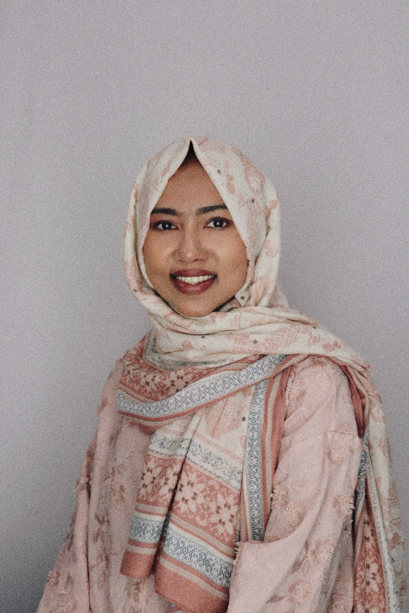

Ummey Hani Barsha
Home
Research
Teaching
Creative
Profile
Academic
Professional
Service
Outreach
Awards

Academic Affiliations
Professional Affiliations
Service
Outreach & Community
Awards & Honors
Research
Research & Scholarship
Research Philosophy
All
Journal Articles
Conference Proceedings
Under Review
In Progress
Teaching
Teaching & Pedagogy
Teaching Philosophy
Teaching Experience
Teaching Evaluations
Upload your teaching evaluation images. Select multiple files at once.
Click to upload evaluation images
JPG or PNG
Creative Scholarship
Exhibited Works